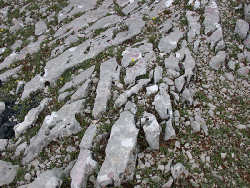

Karren
Lapies
 |
Image: Karren near the
 Zeytintaşi Magarasi Zeytintaşi Magarasi Taurus MountainsTurkey Taurus MountainsTurkey |
 |
| Image: Karren in Gypsum, southern rim of the
HarzGermany |
Karren are minor forms of karst due to solution of rock on its surface. The name Karren is German, or better Austrian, describing a common surface feature in the Austrian and German Alps. In the northern limestone Alps large
 bare karst
bare karstKarren are formed when water runs down a rock surface with a slope, dissoluting the rock while it runs. Thus karren can be found on any soluble rock like limestone, dolomite or gypsum. Water always takes the direction of the highest gradient, which is commonly described by the term steepest slope. When solution of the surface forms a shallow furrow in this direction, water is flowing into the furrow and through it, deepening it more and more. Finally the whole rock surface is drained through karren.
Limestone Pavements
 |
| Image: limestone pavements are large furrows, dissolved by the rain water.
BurrenIreland |
|  |
| Image: limestone pavement.
Taurus MountainsTurkey |
Very similar dissolution effects produce limestone pavements. They look very similar to karren, but they are formed along cracks or fissures in the limestone. In this case the water enters the crack and does not stay on the surface. The dissolution continues inside the crack, which gets wider and wider.
The fissures are originally produced by tectonic movements. Forces in the rock typically produce many parallel fissures. Sometimes also secondary fissures are formed in a certain angle to the primary fissures. Even if this is not the case, it is most likely that
Large limestone surfaces get cut into pavements. The number, position and direction of the clefts depends on the cracks of the limestone. Often the cracks, formed by tectonic forces, run in very few directions. Each direction shows one stage in the tectonic history of the limestone.
Limestone with two main directions of cracks, with an angel of about 90° in between, makes the typical limestone pavement, looking like an enormous chess board.
 |
| Karren Gallery |
 Search Google for "Karren"
Search Google for "Karren" Limestone pavement - Wikipedia, the free encyclopedia
Limestone pavement - Wikipedia, the free encyclopedia Indiana Karst Geology
Indiana Karst Geology